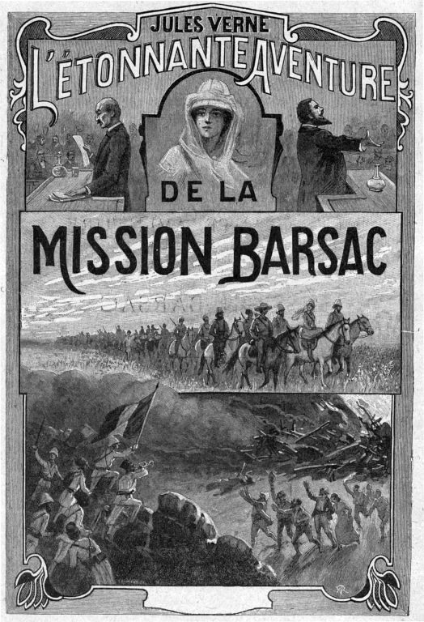
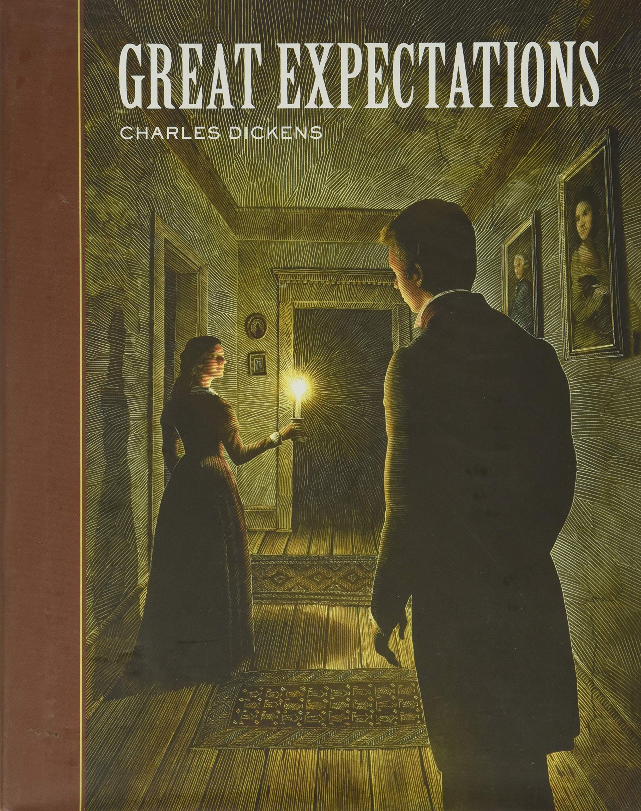
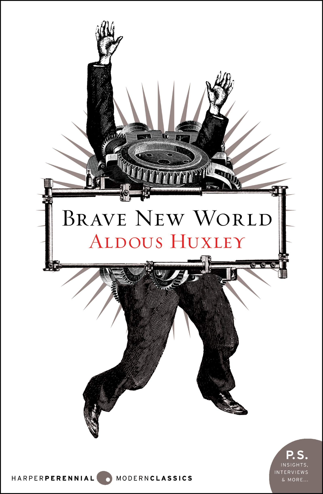

Batranul si marea
Ernest Hemingway
⭐⭐⭐⭐⭐
Fiind un cititor atat de nerabdator e un rezultat remarcabil de neobisnuit cum o carte centrata atat de mult pe liniste, intelepciunea si domoliciunea varstei inaintate si pe analizarea unui fir narativ
sarac, prin monologul interior al unui batran, a reusit sa ma miste intr-o asemenea maniera. In mod cert, nu este o carte pentru oricine, in special nu pentru tipologia mea de receptor. Totusi, pentru mine reprezinta o
capodopera care nici pana acum nu stiu de ce mi-a placut atat de mult. In orice caz, pot spune ca mi-a intarit rezilienta psihica in fata esecului si mi-a solidificat caracterul.

1984
George Orwell
⭐⭐⭐⭐⭐
Cea mai monumentala creatie a lui Orwel, 1984 constituie o critica vehementa adusa la adresa regimurilor totalitariste, reliefata printr-una dintre cele mai sumbre perspective ale literaturii: a omului persecutat,
ingradit si torturat din toate punctele de vedere, atat spiritual, cat si ideologic si experential. Turnura de situatie de la jumatatea volumului a marcat fara indoiala atemporalitatea si legitimitatea firului narativ,
taind in plin avand ceea ca parea conturarea unui cliseu de natura eroica.
Zece Negrii Mitiei
Agatha Christie
⭐⭐⭐⭐⭐
Christie spunea despre aceasta lucrare ca a inceput sa o scrie drept o provocare pentru ea insasi, ca sa-si demonstreze ca este capabila de a oferi forma unei inlantuiri de evenimente stranii atat de fabuloase in aparenta,
dar cu o ancorare bine-definita in realism, explicitata pentru cititorii sai in epilog. Pentru mine, Zece Negrii Mititei reprezinta epitomul literaturii politiste, care tinde inspre limita teoretica a perfectiunii in aceasta
categorie literara. Volumul a setat nivelul de asteptari atat de sus incat, dupa finalizarea povestii, nu am mai citit nicio alta carte politista.
Robinson Crusoe
Daniel Defoe
⭐⭐⭐⭐
Un volum clasic care a pus bazele literaturii de aventura englezesti, care iese in evidenta prin PUTEREA inspirata de protagonist pus in fata celei mai mari adversitati pentru omenire: supravietuirea pe cont propriu, in
salbaticie. In afara de admirabilitatea inspirata de figura centrala a operei, ea este oarecum previzibila, construind un progres treptat, cu suisuri si coborasuri, in starea de trai a lui Robinson.
Adam si Eva
Liviu Rebreanu
⭐⭐⭐⭐
Prin Adam si Eva, Rebreanu renunta atat la stilul sau sumbru si viziunea sa decrepita regasita in romanele sale reprezentative, cat si la stilul realist in care isi contureaza momentele subiectului. Volumul este o expresie
a spiritualitatii autorului, explorand imaginea credintei in reincarnare si in ideea de suflete pereche. Aspectul practic al operei este acela de anihilare al sperantei in dragoste ideala, cultivata de consumerismul contemporan,
prin setarea unui standard al conceptului atat de ridicat, incat devine literalmente irealizabil in parametrii lumii reale. In consecinta, lectura cartii constituie o etapa importanta in dezvoltarea celor aflati inca in etapa iluzorie
a cautarii dragostei "adevarate".
Maestrul si Margareta
Mihail Bulgakov
⭐⭐⭐⭐
Volum inspirat in mod evident din Faust, care portretizeaza venirea diavolului insotit de un anturaj demonic in Moscova, si interactiunea sa cu efect comic cu comunitatea elitista locala de scriitori. Firul narativ principal
este intercalat ocazional cu un al doilea, tot de natura religioasa, o reimaginare a procesului si a rastignirii lui Iisus Hristos. Per total, este o lucrare ce isi are farmecul in substratul sau tematic flexibil, slab definit,
ce incita imaginatia receptorului, dar care pierde prin idilizarea exagerata a romantei (intr-un mod mult imperfect fata de reusita lui Rebreanu) si crearea unui amalgam intre divinitate si profan neinteligibil.
Insula Misterioasa
Jules Verne
⭐⭐⭐⭐
Volum ce seamana izbitor de mult cu Robinson Crusoe, dar care reuseste sa portretizeze o atmosfera aproape diametral opusa. In timp ce Robinson este invaluit constant de o teama fata de propria siguranta, exploratorii lui
Verne sunt cufundati aproape perpetuu de pozitivism si de o adaptabilitate impresionanta, emanand entuziasm. Problemele lor principale sunt constituite de factori externi adesea inexplicabili, cum ar fi ocurentele misterioase
frecvente de pe insula si un atac al piratilor ce are loc in a doua parte a povestii. Cu toate acestea, rezilienta psihica si increderea reciproca ii socoteste mereu victoriosi, ceea ce inspira aceleasi trasaturi in caracterele
cititorilor.
Fundatia (vol 1 si 2)
Isaac Asimov
⭐⭐⭐⭐
Asimov, parintele genului stiintifico-fantastic, seteaza asteptarile ramurii literare la un nivel relativ ridicat. Pe langa elementele futuriste ce tin de construirea universului fictional, cele doua volume abordeaza o tematica
politica de amploare, de tipul dominatiei prin misionarism religios sau prin dependenta de comert.
Laleaua neagra
Alexandre Dumas
⭐⭐⭐⭐
O carte reprezentativa pentru romantismul francez, Laleaua neagra relateaza in maniera realista tumultul societatii franceze post-napoleonice, redata prin perspectiva subiectiva a unui botanist pasionat.
Ferma Animalelor
George Orwell
⭐⭐⭐⭐
Una dintre primele critici aduse de catre Orwell totalitarismului, ferma animalelor constituie o transpunere a atrocitatilor nemeritocratice ale centralizarii puterii intr-o clasa conducatoare, intr-un sistem
care are ca scop initial insasi abolirea acestui tip de diviziune de clasa, intr-o maniera accesibila oricarui tip de cititor. Personal, prima data cand am vazut filmul animat inspirat din carte a fost la 12 ani la ora de istorie,
o varsta la care initial nu aveam habar de conflictele ideologice ce au avut loc in ultimul secol, dar la care totusi am putut intelege consecintele despotismului la nivelul unei societati.
Metamorfoza
Franz Kafka
⭐⭐⭐⭐
Kafka reuseste sa contureze sentimentul de alienare prin asocierea protagonistului un element supranatural figurativ, parabolic. Transformarea in gandac a lui Gregor este ceva ce ni se poate intampla tuturor in interior,
cand realizam ca mediul in care ne-am pricopsit nu ne mai reprezinta si nu mai are influenta pe care ne-am dori-o asupra noastra. Consecintele acestei realizari sunt enuntate in detaliu pe parcursul volumului, pe care il recomand
chiar si ca pe o experienta recreativa.
Nimic nou pe frontul de vest
Erich Maria Remarque
⭐⭐⭐⭐
Volumul reprezinta o demitizare profunda a razboiului, prin transpunerea in maniera realista, tragica, si distructiva a catastrofelor pe care acesta le are atat asupra intregilor comunitati de civili prinse la mijloc intr-un
conflict in care nu au ales sa participe, cat si asupra spiritelor soldatilor implicati. Camaraderia este sigura motivatie sugerata a recrutilor de a continua lupta, care in toiul crizei capata dimensiuni hiperbolice.

Strainul
Albert Camus
⭐⭐⭐⭐
Dintre toate operele lui Camus pe care le-am citit, pot spune ca "Strainul" este singura care mi-a placut. Nonsalanta si filosofia de viata a protagonistului, desi etichetate in parcursul actiunii de opinia majoritara a fi imorale,
descriu o absenta admirabila a emotiilor si a impulsurilor primitive, lasand loc unei ratiuni de ordin superior. Pus fata in fata cu tendinta umana de a se orienta dupa propriile emotii, judecand diferenta dintre bine si rau strict
sub filiera emotiilor cauzate partilor, protagonistul isi pierde insusi aura divina de raceala si este tulburat de o absurditate atat de profunda a fiintei umane obsinuite, incapabila sa isi trateze propria existenta cu pragmatism.

Uimitoarea aventura a misiunii Barsac
Jules Verne
⭐⭐⭐⭐
Din putinul pe care mi-l amintesc din cartea pe care am citit o in clasa a 2-a, pot spune ca Jules Verne, inainte de moartea sa, a atins pragul de maiestrie relativa la perioada in care a scris, dovedind capacitati impresionante
de a jongla cu distributia actiunii in momentele subiectului, in asa fel incat sa impresioneze cu lovituri de teatru de o anvergura exponentiala, anticipate chiar din primele pagini ale volumului.
Singur pe lume
Hector Malot
⭐⭐⭐⭐
Alta carte pe care mi-o amintesc foarte vag, citind-o tocmai in clasa intai, Singur pe lume, cred ca a fost primul roman mai lung de 100 de pagini pe care l-am parcurs. Cu un fir narativ foarte amplu si emotionant, o recomand
tipologiei de cititori nerabdatori.
Jocul de-a vacanta
Mihail Sebastian
⭐⭐⭐⭐
Desi scurta ca intindere, "Jocul de-a vacanta" ilustreaza cu mare pricepere 2 teme care, pentru mine, au o insemnatate foarte ridicata: pretul si dulceata libertatii si efemeritatea dragostei. Probabil daca nu as fi fost
atat de impresionat de aceste teme nu as fi evaluat cartea atat de bine, de aceea o recomand doar celor care considera ca au o legatura puternica cu sferele literare mentionate.

Alexandru Lapusneanul
Costache Negruzzi
⭐⭐⭐⭐
Cartea pentru bac care, fara indoiala, mi-a placut cel mai mult, datorita curajului cu care este expusa cruzimea istorica in fraze si a derularii rapide a actiunii, care nu lasa timp de plictiseala pentru nerabdatori.
Drumul spre inalta societate
John Braine
⭐⭐⭐
O carte superficiala, care promoveaza valori nemeritocratice si care portretizeaza un protagonist parvenit si slab de caracter in incercarea sa de a ajunge in "inalta societate" prin asocierea romantica cu o partenera
de origini instarite, timp in care se preocupa cu prezenta unei femei mai in varsta, care nu se aliniaza cu planurile sale si sfarseste tragic. Desi a castigat cateva stele in ochii mei prin duritatea expunerii si a criticarii
slabiciunii personajelor de catre ocazionale accese ale naratorului, nu recomand.

Marile Sperante
Charles Dickens
⭐⭐⭐
Un bildungsroman monoton, in care firul epic este reprezentat in cea mai mare proportie de conturarea unor turnari de situatie telenovelice in punctul culminant al actiunii.
Procesul
Franz Kafka
⭐⭐⭐
O carte care, desi abordeaza o serie de teme interesante, care includ, dar nu se limiteaza la efectul dezarmant al autoritatii asupra supusilor, redundanta si superficialitatea formalitatilor si a birocratiei,
si superficialitatea societatii ca un intreg, in clasa a 10-a m-a tinut intr-un constant sentiment de plictiseala repetitiva, poate probabil pentru a ma imersa in sentimentul potretizat in universul fictional.

Minunata Lume Noua
Aldous Huxley
⭐⭐⭐
Carte care, desi pleaca de la o premisa inovativa, potrivit careia cele mai ideale utopii par mai degraba distopii dupa standardele curente, are o executie ce lasa de dorit, fructificand un fir epic sec si
conturat intr-un stil incompetent. Pentru mine, volumul reprezinta un mare potential irosit.
Crima si pedeapsa
Fyodor Dostoievski
⭐⭐⭐
Lansez opinia controversata care spune ca repercusiunile psihologice pe care Dostoievski le ilustreaza in acest roman asupra protagonistului nu sunt nimic mai mult decat niste grosolane exagerari. In absurda
posibilitate in care de fapt Raskolnikov era de fapt un individ cu o constiinta foarte bine definita, cu un simt al datoriei puternic, din partea caruia ar fi fost firesti astfel de remuscari, tin sa reamintesc
premeditarea cu care a planuit crima batranei, planificare de care niciun astfel de om nu ar fi in stare, indiferent de constrangerile ce tin de mediu care i s-ar fi putu aplica. Doar un om virtuos ar fi avut comportamentul
lui Raskolnikov pe tot parcursul volumului, dar un om virtuos niciodata nu ar fi facut ce a facut protagonistul nostru la inceputul actiunii.
Ocolul pământului în 80 de zile
Jules Verne
⭐⭐⭐
Alta carte pe care am citit-o acum foarte mult timp, pe care o recomand celor ce vor sa il descopere pe Jules Verne si nu stiu de unde sa inceapa. Cartea este emblematica pentru creatia sa, facand buna practica
de stilul sau narativ imbogatit cu detalii stiintifice, avand un ritm narativ constant si previzibil, usor de inteles, ce evita drama si turnurile de situatie.
Alchimistul
Paulo Coelho
⭐⭐⭐
Un volum considerat de multi a fi monumental, dar care personal mi-a parut o incercare amatoare de a fructifica tema potentialului infinit al fiintei umane. Este depasit de multe alte carti si multe alte personaje fictive
in ceea ce priveste atat hotarare, tarie de caracter si determinare inspre indeplinirea scopurilor, toate trasaturi pentru care Santiago, protagonistul nostru este admirat. Este privit drept o fabula pentru indeplinirea destinului,
dar personal nu imi pare mai mult decat imaginea cautarii unui mod de a face timpul sa treaca mai repede in absenta unui destin: Santiago nu stie pentru ce lupta, doar incearca sa ajunga intr-un loc pe care l-a visat pentru ca nu are
nimic mai bun de facut. Mai mult, nu ajunge acolo prin munca si merit propriu neaparat, ci prin intermediul unor ajutoare artificiale, de dimensiune divina, numite "semne" pe parcursul cartii.
Baltagul
Mihail Sadoveanu
⭐⭐⭐
Un roman solid care impresioneaza prin taria protagonistei si inspira PUTERE, dar dezamageste prin firul narativ sarac si predictibil si prin caracterul traditionalist, al caruia personal nu sunt fan.
Chemarea lui Chtulu si alte povestiri
H.P.Lovecraft
⭐⭐⭐
O carte demna de toata aprecierea, care a pus bazele genului Horror-ului Cosmic, dar pe care am esuat in a o admira cum se cuvine din cauza lipsei de rabdare. Lovecraft poate fi considerat un maestru al atmosferei, dar care
in procesul de a o cladi foloseste foarte mult descrierea, care in cantitati mari poate deveni mundana. Personal, pe parcursul a mai multor pagini de descriere, realizam ca incepeam sa ma gandesc la altele si nu reuseam sa
ma concentrez.
O scrisoare pierduta
I.L.Caragiale
⭐⭐⭐
Sceneta care se auto-intituleaza drept comedie, dar are un umor deosebit de sec. Cele 3 stele vin din partea satirii politice si a criticii incompetentei din partea asa-zisor paturi superioare ale societatii. Personajele
lasa si ele de dorit, depasind normele firescului in ceea ce priveste iesirile emotive si imaturitatea.
Moartea lui Ivan Ilici
Leo Tolstoy
⭐⭐
80 de pagini de continut care ar fi putut fi spus in sub 5. Si nici alea 5 prea interesante.
20 de mii de leghe sub mari
Jules Verne
⭐⭐
Carte care nu se ridica sub nicio forma la standardul pe care Verne l-a setat in ochii mei la celelalte 3. 400 de pagini de descriere cu ancorare ridicata in biologie, sustinuta pe un fir narativ deosebit de fragil.
Premisa promitatoare, executie slaba, potential irosit.
Moara cu noroc
Ioan Slavici
⭐⭐
Minusuri: mult prea multa analiza interioara, a unui personaj cu un interior slab; absenta aproape in intregime a unui fir narativ; escaladare incompetent executata(150 de pagini de aproape nimic, apoi crime peste crime);
personaj feminin de o slabiciune tipica; mi-a picat la bac, am scris 6 pagini si tot n-am luat 10. Plusuri: antagonist chad.
Ciuma
Albert Camus
⭐⭐
Voi zice doar ca am adormit de peste 10 ori pana am terminat-o. Si am citit-o in timp de pandemie cand se presupune ca trebuia sa ma intereseze cu atat mai mult.
Caderea
Albert Camus
⭐⭐
Am citit 100 de pagini din ea ca atatea are si nici nu stiu ce am citit.
Idiotul
Fyodor Dostoievski
⭐⭐
Dupa 100 de pagini in care acest domn idiot parea printre cele mai promitatoare personaje intalnite in literatura, care parea ca intelege perfect mintea umana si stie intocmai ce are de facut pentru a iesi invingator
in orice situatie sociala, au urmat 600 in care mi-a fost demonstrat ca m-am inselat grav si e doar un alt erou rus de gramada, orbit de iluzia simtului moralitatii si controlat prea mult de sentimente nefiltrate.
La tiganci
Mircea Eliade
⭐⭐
Daca eram insurat cred ca preferam sa merg in vizita la mama soacra decat sa citesc vizita expusa in cartea asta.